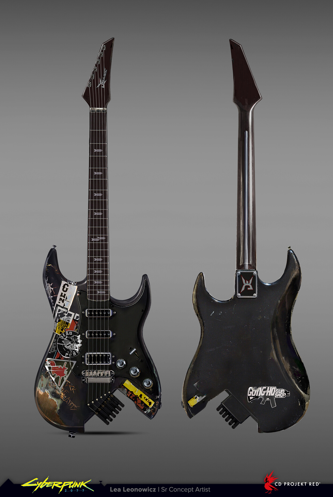
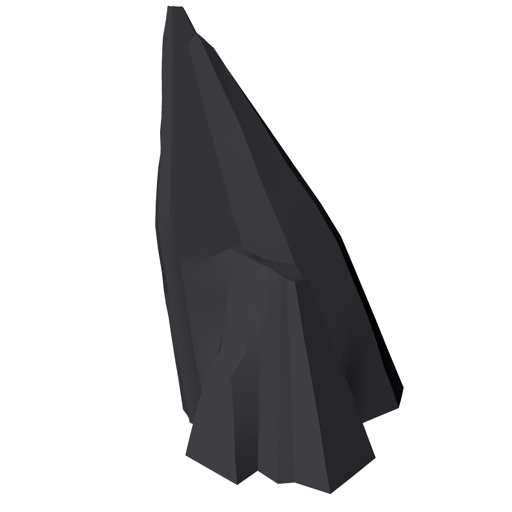
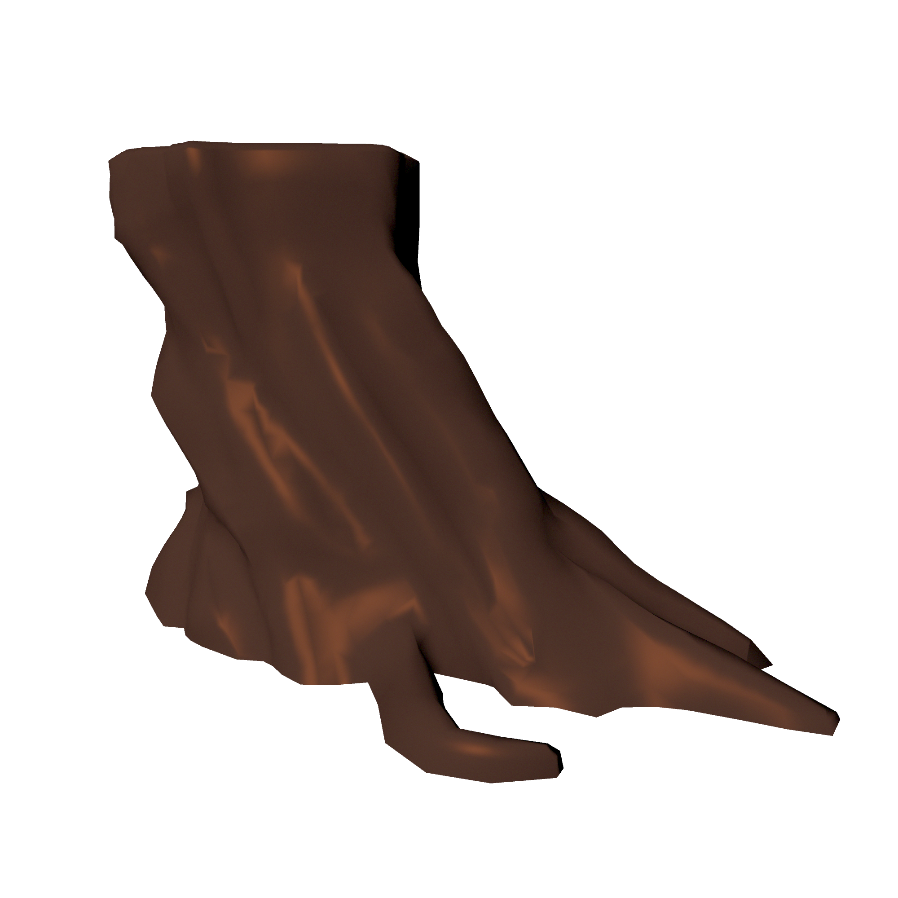
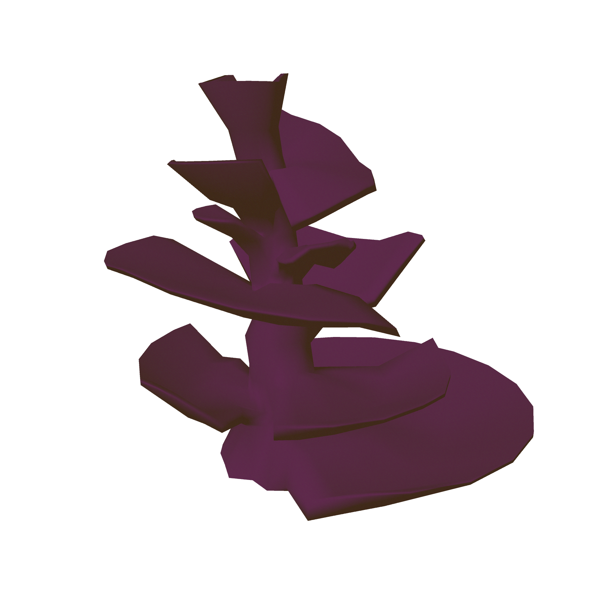
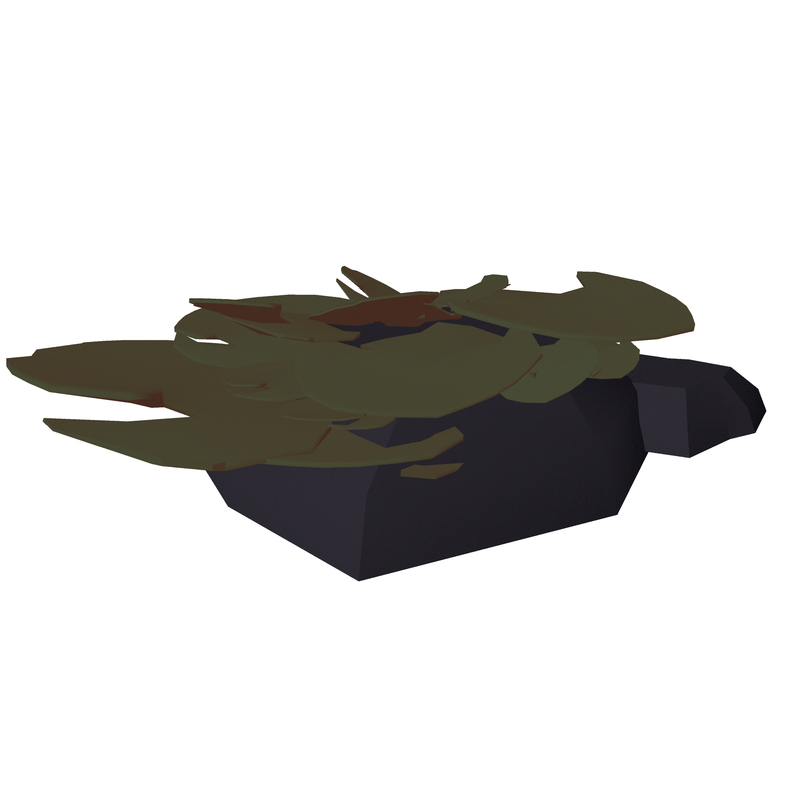

annie holliday



Johnny Silverhand's Guitar | Personal work [Cyberpunk 2077]
This was a personal project where I modelled Johnny Silverhand's guitar from Cyberpunk 2077. I found it particularly enjoyable because getting all the guitar parts to be both life and design accurate was especially challenging. I have also provided the original game reference.


Steves | Personal work [People Just Do Nothing]
As practice for character animation I decided to model Steves from People Just Do Nothing as a semi-realistic figure. My intention with this was to make an animation-ready model. I also created the blueprint myself using image references from the show.




Misc | Studio Project work [Stratonaut]
Some lower poly models I created to be textured and used in our Stratonaut game - they were kept very simple in order to fit the cel-shaded stylisation within the game engine. You can read more about our project on the Stratonaut page.


Space shuttle | Assignment work
For my first year modelling assignment I was asked to model a space shuttle, which I achieved by collecting reference images of the shuttle itself and using them as planes in maya.


Kerry Eurodyne's Guitar | Personal work [Cyberpunk 2077]
This was an earlier attempt at modelling a guitar, which I made last year, and was incredibly basic and low poly compared to my current work. You can see how I have improved with my most recent Johnny Silverhand one.


Tree | Studio Project work [Stratonaut]
The designers on the team were asked to create a series of models to show our producer to determine who the lead modeller would be, and this tree was one of them. It was later added to the game as an asset.